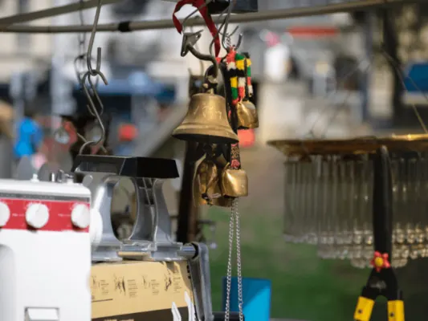
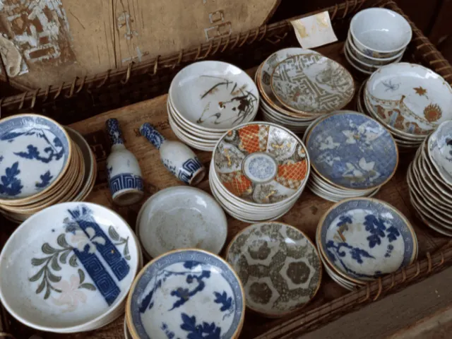
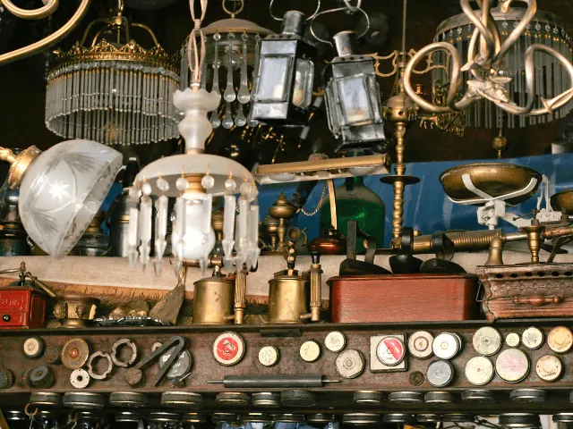

Parels vinden in Nijmeegse kringloopwinkels
Gepubliceerd op 3 december 2022, bijgewerkt op 20 februari 2024
Onderdeel van de gids Winkelen in Nijmegen

Het is een fenomeen dat steeds bekender is geworden in de afgelopen jaren, namelijk het shoppen in een kringloopwinkel. Dit is niet alleen goed voor de portemonnee, maar ook nog eens voor het milieu. Door te shoppen in een kringloopwinkel draag je namelijk ook nog eens bij aan een betere en duurzamere wereld. Naast dat het een duurzame optie is, zal je opmerken dat het shoppen in een kringloopwinkel ook ontzettend leuk kan zijn. Benieuwd naar welke kringloopwinkels er zijn in en rondom Nijmegen? Lees dan verder!
Waarom shoppen in één van de kringloopwinkels?
Een kringloopwinkel zet zich in voor mens en milieu. De producten die worden aangeboden in een kringloopwinkel hebben namelijk al eerder een kans gehad bij hun vorige eigenaar. Door deze circulatie van gebruikte goederen te stimuleren, wordt de afvalberg steeds kleiner. Ook zijn er minder grondstoffen nodig omdat er geen nieuwe productie plaatsvindt. Het bewustzijn omtrent duurzaamheid is de afgelopen jaren alsmaar toegenomen, zo ook de interesse in het shoppen in een kringloopwinkel. Toch zijn er nog enkele mensen die zich schamen als zij een bezoek brengen aan een kringloopwinkel, maar tegenwoordig is deze schaamte nergens voor nodig. Tweedehands spullen zijn helemaal in trek en vaak kan je de leukste en meest unieke items scoren. Denk daarbij aan vintage items, maar ook retro of antieke items. De spullen worden vaak schoongemaakt en opgeknapt voordat deze worden aangeboden in de kringloopwinkel. Het advies is wel om de aangeschafte items zelf nog even schoon te maken of te wassen. Voor jong en oud, kringloopwinkels zijn er voor iedereen.

Goed voor de portemonnee
Ben je sinds kort verhuisd naar Nijmegen, of ben je gewoon op zoek naar een goedkope vernieuwende inboedel? Neem dan eens een kijkje bij één of meerdere kringloopwinkels in Nijmegen. Er is veelal een ruim aanbod van verschillende items die jouw (nieuwe) woning of studentenkamer doen aankleden en opvrolijken. Daarbij bespaar je ook nog eens geld. De items in een kringloopwinkel zijn veelal leuk geprijsd. Ideaal als je niet zoveel geld wilt uitgeven of als je een klein budget hebt.
Het leuke van een kringloopwinkel is dat je dus altijd unieke items koopt en dat er altijd een wisselend assortiment is. Er is namelijk geen één dag hetzelfde bij de kringloopwinkel. Laat het je daarom ook niet ontmoedigen als er een keer niets voor jou tussen zit. Het zou zomaar kunnen dat als je een paar dagen later terugkomt een compleet ander assortiment wordt aangeboden wat wel voldoet aan jouw wensen.
Mocht je op zoek zijn naar een cadeau voor iemand, probeer dan eerst of ze in jouw lokale kringloopwinkel wat leuks verkopen. Je kan hier namelijk van alles vinden voor een leuke prijs: vintage kleding, retro meubels of spannende boeken. Zo goedkoop is een cadeau nog nooit geweest.
Tips voor een geslaagde vondst
Als je al een paar kringloopwinkels in Nijmegen hebt bezocht, dan kan het zo zijn dat het aanbod wel eens is tegengevallen. Laat dit je niet ontmoedigen. We behandelen daarom graag wat tips.
- Bezoek een aantal kringloopwinkels regelmatig: het aanbod is bijna elke week wel anders. Door meerdere kringloopwinkels in en rondom Nijmegen te bezoeken, ben je altijd op de hoogte van het actuele aanbod.
- Weet waar je naar zoekt: ben je op zoek naar nieuwe retro meubels of antieke items? Deze kan je zeker tweedehands vinden. Een kringloopwinkel kan soms wat chaotisch zijn. Maak daarom een lijstje met de items die je graag wilt kopen.
- Neem de tijd: laat je niet gek maken door alle items die worden aangeboden. Neem rustig de tijd tijdens jouw bezoek aan de kringloopwinkel. De mooiste parels liggen vaak verborgen.
- Twijfel: ga voor jezelf goed na of je een item wel of niet wilt kopen. Het aanbod in een kringloopwinkel verandert met de dag en het zou goed kunnen dat het aangeboden item een dag of zelfs al een uur later weg is.
- Iets opleuken doet wonderen: soms moet je bepaalde items opleuken voordat het een passend item voor jou is. Een ander kleurtje door middel van een spuitbus of verf doet vaak wonderen. Zo zorg jij ervoor dat het helemaal bij jouw interieur past.

Spullen doneren aan de kringloopwinkel
Heb je jouw woning opgeruimd en heb je spullen die je niet meer gebruikt, maar vind je het zonde om deze weg te gooien? Doneer deze dan aan een kringloopwinkel in Nijmegen. Opgeruimd zijn geeft niet alleen een goed gevoel, het geeft ook extra ruimte. En als je besloten hebt om je spullen te doneren aan de lokale kringloopwinkel, dan doe je ook nog iets goeds voor de maatschappij. De kringloopwinkel zal hier heel blij mee zijn. Zij zorgen ervoor dat jouw spullen een tweede of misschien wel een derde kans krijgen. Ook creëer je werkgelegenheid voor de medewerkers van de kringloopwinkel. Wat wil je nog meer doen voor een feel good moment?
De meeste kringloopwinkels accepteren onder andere spullen zoals kleding, meubels, boeken, speelgoed en elektronische apparaten. Als je afstand wilt doen van groter meubilair om wat voor reden dan ook, neem dan contact op met de kringloopwinkel. Vaak halen zij dit gratis op, waardoor jij weer plek creëert voor jouw nieuwe bankstel of eettafel.
Kringloopwinkels in Nijmegen
Soms is het niet altijd duidelijk of een kringloopwinkel bij jou in de buurt zit. Daarom wordt onderaan dit artikel een lijst weergegeven met verschillende kringloopwinkels in en rondom Nijmegen. Daarnaast kan je ook gebruik maken van de gratis ‘Kringloop App’. Deze kan je downloaden in de App of Play Store. In deze app kan je ruim 900 kringloopwinkels vinden en zoeken op postcode. Waar ga jij jouw volgende parels scoren? Ben je op zoek naar een andere winkel dan een kringloopwinkel, ga dan winkelen in Nijmegen.
Onze top suggesties
Sussies Vintage Nijmegen
Sussies Vintage Nijmegen, de zusterlocatie van de befaamde Utrechtse winkel, biedt een schat aan vintage kledingstukken voor zowel heren als dames. Duik in collecties van jaren ’70 jurkjes tot 90’s sport sweaters en unieke 80’s blouses. Met persoonlijk styling advies en een flexibel ruilbeleid is een bezoek aan deze winkel aan de Lange Hezelstraat een unieke ervaring voor elke modeliefhebber.
Het Goed Nijmegen
Bij ‘Het Goed’ in Nijmegen vind je een breed scala aan tweedehands schatten, variërend van meubels tot kleding en accessoires. Gelegen aan de Industrieweg, biedt deze kringloopwinkel niet alleen de mogelijkheid om te winkelen, maar ook om je eigen spullen in te leveren van maandag tot zaterdag. Met ruime openingstijden en een hart voor duurzaamheid is ‘Het Goed’ een must-visit voor iedereen die van hergebruik en unieke vondsten houdt.
Fabrics & More
Fabrics & More is niet zomaar een vintage kledingwinkel. Met vestigingen in zowel Nijmegen als Arnhem biedt het 700 vierkante meter vol modegeschiedenis, van iconische jeansmerken als Levi’s tot unieke designer stukken van over de hele wereld. Een bezoek voelt als een reis terug in de tijd; de sfeer ademt de jaren van Flower Power en Woodstock, terwijl de geur van patchouli en klanken uit de jaren ’70 en ’80 de lucht vullen. En met hun unieke “kleding per kilo” verkoopmethode, maakt winkelen hier een echt avontuur. Bovendien strekt hun liefde voor vintage zich uit tot festivals, waar ze verschijnen met vintage voertuigen vol met unieke kledingstukken.
Kringloopwinkel Marcel
Bij Kringloopwinkel MARCEL is het motto duidelijk: wat voor de één overbodig is, kan voor een ander een schat zijn. Op een imposante 1300 m2 winkeloppervlakte, vind je van boeken en kleding tot complete eethoeken en elektrische apparaten. De winkel, gemakkelijk bereikbaar met gratis parkeermogelijkheid, biedt een uniek assortiment waarin ieder item zijn eigen verhaal heeft. Hier shop je niet alleen; je ontdekt, creëert en wordt geïnspireerd. Of je nu op zoek bent naar dat ene aparte tafeltje of een curiosa-item om je interieur te transformeren, MARCEL heeft het. Kom langs van woensdag tot zaterdag tussen 9:30 en 17:00 uur, en geniet van gratis koffie en thee tijdens je speurtocht!
Habbekrats Nijmegen
Habbekrats is niet zomaar een tweedehandswinkel; het is een plek waar elk item een verhaal te vertellen heeft. Gelegen in het hart van Nijmegen, straalt deze winkel passie, duurzaamheid en kwaliteit uit. Al sinds 1983 biedt Habbekrats een eclectische mix van vintage, design, industrieel en kunst. Hun uitgebreide assortiment omvat kleding, accessoires, meubels, curiosa en zelfs geluidsapparatuur en witgoed. Wat Habbekrats uniek maakt, is hun voortdurende zoektocht naar nieuwe schatten, niet alleen lokaal, maar ook over de grenzen. Opgericht door Hans Holland, wordt de winkel sinds 2019 liefdevol voortgezet door zijn dochter Ellen, die de zaak een frisse, creatieve draai heeft gegeven terwijl ze trouw blijft aan de ziel en het erfgoed van Habbekrats. Het is een plek waar het verleden nieuw leven wordt ingeblazen en klaarstaat voor een nieuw hoofdstuk.
OVERZICHT KRINGLOOPWINKELS
BEKIJKKringloop- en vintagewinkels in Nijmegen
Zin om te beginnen? In onze bedrijvengids vind je alle 22 winkels in Nijmegen, met openingstijden, kenmerken en een kaart.
Bekijk alle 22 winkels in Nijmegen
Heb je zelf een winkel? Laat je hier uitlichten.